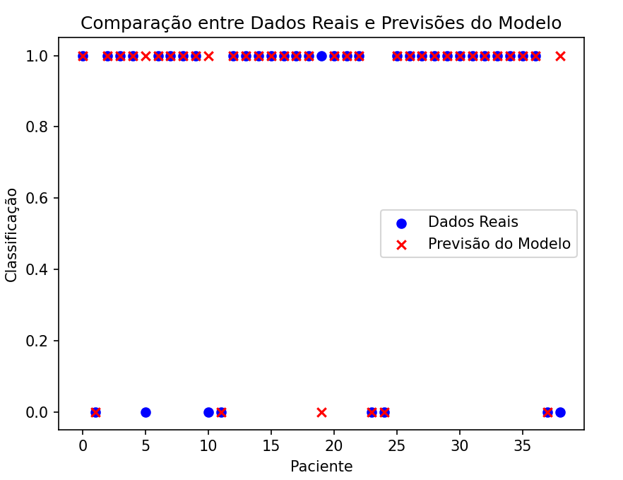

Projeto em destaque
ML Parkinson
Projeto de Machine Learning desenvolvido em Python para a classificação de dados biomédicos relacionados à doença de Parkinson, utilizando características extraídas de sinais de voz.
- Python
- Scikit-Learn
- Pandas